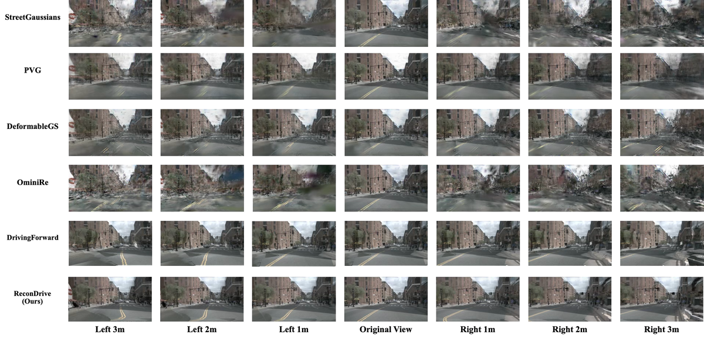

ReconDrive：用于自动驾驶场景重建的快速前馈 4D 高斯分布
简单摘要
闭环评测对端到端自动驾驶至关重要，要求自车接收与其动作一致的真实传感器观测，而基于真实世界多视图图像的视觉场景重建和新视角合成为此提供了基础。4DGS扩展了3DGS的时间维度，在几何精度、光度保真度和实时渲染之间取得有效平衡，非常适合交互式驾驶仿真。然而传统4DGS方法如StreetGaussian依赖逐场景优化，需要LiDAR先验进行初始化，无法利用跨场景共享的结构知识，每个新环境都需要大量计算开销。VGGT等前馈式3D基础模型展示了高效重建的潜力，但将其扩展到面向自动驾驶的4D高斯重建面临三个挑战：VGGT特征缺乏回归高保真外观属性所需的细粒度细节；静态骨干网络无法表征交通参与者的动态运动；数据鸿沟导致3D几何预测误差且无法利用驾驶数据集中预标定的传感器内外参。本文提出ReconDrive，一种仅从视觉输入重建4DGS表征的前馈框架。

核心创新
1. 设计混合高斯预测头：将原始图像与密集像素级特征拼接提供外观属性回归所需的光度线索，同时将相机标定直接融入中心位置预测头实现精确定位。
2. 提出静态-动态4D组合策略：利用SAM2基础模型提取物体掩码，通过像素级对应为动态高斯体赋予时间速度。
3. 设计分段时序融合机制：将长驾驶序列划分为片段，融合局部高斯簇为统一4D表征。
4. 引入新帧投影损失，针对未见时间视图稳定几何重建，并在nuScenes上建立了全面基准。
技术细节
ReconDrive是一个前馈式框架，从多视图城市场景输入中一次性生成4D高斯泼溅（4DGS）表示。其核心设计目标是将静态背景几何与动态交通参与者的运动显式解耦，同时维持实时渲染能力。
问题形式化：给定城市场景序列，输入为T时刻第c个相机捕获的RGB图像I_{t,c}，每个相机具有固定的标定矩阵K_c（包含内参及相对于自车坐标系的固定外参变换）。场景的时序运动由时变的自车位姿E_t捕获，将车辆局部坐标系映射到全局世界坐标系。目标是通过前馈模型将输入映射至4DGS表示，使得对任意时刻和任意新视角可检索并投影对应的高斯核以渲染高保真观测。
分段式4D表示：为在大规模城市场景中维持计算可处理性，ReconDrive采用分段式表示策略。将场景沿时间轴划分为若干时段[T_s, T_e]，每段独立生成4D高斯核。每个4D高斯核由中心-运动范式定义：G = {μ, R, S, σ, c}，其中μ为中心位置，R为旋转矩阵，S为各向异性缩放向量，σ为不透明度，c为球谐系数编码的视角依赖颜色。
静态-动态组合策略：对于静态背景高斯，中心μ保持不变；对于动态物体高斯，假定在段内服从局部线性运动：μ(t) = μ(t_0) + v·(t - t_0)，其中v为回归得到的速度向量。利用两帧上下文帧，ReconDrive回归这些时空参数以构建统一的4D表示。
双路径架构：特征主干网络（基于VGGT架构，使用两层级联阶段提取时空特征）输出稠密图像token后，分两路处理：(1) 高斯中心预测头（GCPH），预测空间坐标；(2) 高斯参数预测头（GPPH），预测外观属性。两者共同形成完整的高斯参数。
混合高斯预测头（Hybrid Gaussian Prediction Head）：直接回归主干特征虽然可以利用3D基础模型的几何先验，但存在两个固有限制：(a) 主干特征的潜在表示针对结构一致性优化，缺乏高保真渲染所需的光度细节；(b) 跨视图空间对齐不足。混合头通过以下机制克服：(1) 将原始图像线索融合进属性回归路径以弥补光度不足；(2) 在GCPH中显式融合传感器标定信息，确保重建场景精确锚定于自车坐标系。具体而言，通过交叉注意力将原始RGB特征与几何token融合，使得外观分支获得纹理信息。
参数高效微调：为弥合通用3D数据与大规模城市驾驶场景的域差异，采用冻结预训练VGGT权重的策略，并应用LoRA进行域适配（秩r=8，缩放因子α=16），在保持几何结构先验的同时高效适应自动驾驶域。
4D高斯构建与融合：利用SAM2从两帧上下文帧中提取交通参与者（特别是车辆）的实例级掩码。对于每个动态对象，其在t_1帧自车坐标系中的3D位置变换后计算位移，在短时段内假定额体匀速运动，速度估计为v_obj = (p_{t1→ego(t0)} - p_{t0→ego(t0)}) / (t1 - t0)。获得维度为H×W×3的动态物体运动流后，将t_1帧的高斯变换到t_0帧的自车坐标系（空间变换和时态变换不可交换，因为速度场在t_0坐标系中计算），最后拼接得到完整的4D高斯泼溅。
训练目标：采用感知损失（基于预训练VGG网络）与像素级L1损失和SSIM损失的组合，确保渲染质量。
实验结论
本节介绍了一个视觉城市场景重建基准，包括 nuScenes 数据集上最先进的每场景优化和前馈方法。相比之下，ReconDrive 在所有指标上都实现了最先进的性能，达到 26.7% mAP 和 18.9% AMOTA。与前馈方法 DrivingForward 相比，ReconDrive 保留了精确的几何一致性（在树和周围环境中很明显），并且随着移动的进行，性能 lazy' decoding='async' />
4.1 基准
我们通过以下三种方式评估模型的性能。我们使用非上下文帧（即每第 2-5 帧）作为地面实况图像，并使用 PSNR、SSIM 和 LPIPS 作为评估指标。为了评估 3D 感知的新颖视图合成，我们通过将自我车辆轨迹相对于原始路线移动 m、m 和 m 来模拟横向摄像机移动。
4.2 主要实验结果
这些定性结果证明了 ReconDrive 能够实现高保真渲染，同时在视图合成过程中保持精确的空间对齐。相比之下，现有的前馈基线明显滞后（例如，Drivingforward 的 PSNR 22.83），凸显了可概括性重建和特定场景重建之间的传统性能差距。它在像素、结构和感知指标方面优于所有基线，实现了 32.66 的卓越 PSNR、0.9589 的 SSIM 和 0.0618 的 LPIPS。
理解评价
如果把这篇论文放回问题背景里看，它真正的价值在于：虽然 4D 高斯泼溅 (4DGS) 在准确性和效率之间提供了良好的平衡，但现有的每场景优化方法需要昂贵的迭代细化，导致它们无法扩展到广泛的城市环境。这说明作者不是只补一个局部模块，而是在重新组织问题该怎样被解决。
最能支撑这个判断的，还是实验给出的证据：为了解决这些限制，我们提出了 ReconDrive，这是一种前馈框架，它利用和扩展 3D 基础模型 VGGT 来实现快速、高保真 4DGS 生成。换句话说，这些设计并不只是概念上更完整，而是实实在在改变了最终结果。
当然，它离真正成熟的方案还有距离：当前方案的局限在于它仍然受制于计算资源、输入质量或场景复杂度，距离真正稳健的大规模部署还有差距。后续更值得继续推进的方向，是 未来继续提升效率、泛化能力以及在更复杂场景下的稳定性。